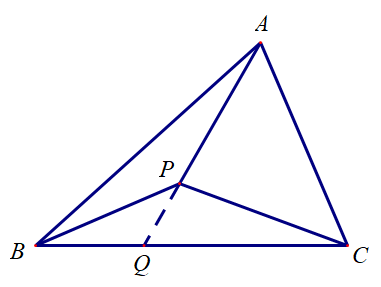
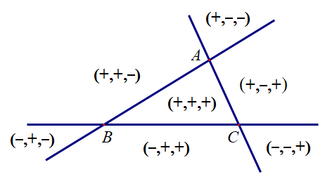

1. 奔驰定理
在讲平面向量的时候，遇到了一个经典的题目：
已知点 P 为 △ABC 内一点，求证：S△PBC⋅PA+S△PCA⋅PB+S△PAB⋅PC=0．
证明如下：如图，延长 AP 交 BC 于 点 Q，则 S△PCA+S△PABS△PBC=∣AP∣∣PQ∣，
故 PQ=−S△PCA+S△PABS△PBC⋅PA．
另外，因为 ∣BQ∣:∣QC∣=S△PAB:S△PCA，所以 PQ=S△PCA+S△PABS△PCA⋅PB+S△PAB⋅PC，
故 −S△PBC⋅PA=S△PCA⋅PB+S△PAB⋅PC，移项后命题得证．

这个结论因为它的图形长得像奔驰的标志，被称为“奔驰定理”．
这个名字最早的出处不详，但实际上，这对应的就是三角形的“重心坐标”．
2. 三角形的重心坐标
对 △ABC 所在平面内任意一点 P，如果存在不全为零的实数 λ0，λ1，λ2，使得
(λ0+λ1+λ2)OP=λ0OA+λ1OB+λ2OC
对平面内任意一点 O 成立，则称 (λ0:λ1:λ2) 为点 P 相对于 △ABC 的重心坐标．
显然，重心坐标并不是唯一的，(kλ0:kλ1:kλ2) 也是点 P 相对于 △ABC 的重心坐标．
为了保证唯一性，我们可以进行对其正规化，取 λi′=λi/k=0∑2λk，则 i=0∑2λi′=1，此时称 (λ0′:λ1′:λ2′) 为其正规化（重心）坐标．
2.1. 重心坐标的存在性
对 △ABC 所在平面内任意一点 P，根据平面向量基本定理，存在唯一的实数对 (λ,μ)，使得 AP=λAB+μAC．因此
OP=OA+AP=OA+λAB+μAC=OA+λ(OB−OA)+λ(OC−OA)=(1−λ−μ)OA+λOB+μOC
取 (λ0,λ1,λ2)=(1−λ−μ,λ,μ) 即可．注意这已经是正规化坐标．
2.2. 正规化坐标的符号
当点 P 位于 △ABC 内部的时候，λ,μ,λ+μ∈(0,1)，故 1−λ−μ∈(0,1)，也就是三项均是正数．
对于 △ABC 外的情况，可以参考下图：

2.3. 重心坐标的几何意义
在平面直角坐标系 xOy 中，设 A(x1,y1)，B(x2,y2)，C(x3,y3)，P(xP,yP)，点 P 相对于 △ABC 的重心坐标为 (α:β:γ)，其中 α+β+γ=1．
根据定义，OP=αOA+βOB+γOC，
因此
⎩⎨⎧xPyp1=αx1+βx2+γx3=αy1+βy2+γy3=α+β+γ⟺xPyP1=x1y11x2y21x3y31αβγ
根据 Cramer 法则，
α=S△ABCS△PBC,β=S△ABCS△PCA,γ=S△ABCS△PAB
这里的面积指的是三角形的有向面积，正负与三个点的位置关系有关．
所以，(S△PBC:S△PCA:S△PAB) 就是点 P 相对于 △ABC 的重心坐标，这对应的就是“奔驰定理”中的三个系数．
实际上，根据“奔驰定理”，
S△PBC⋅(OA−OP)+S△PCA⋅(OB−OP)+S△PAB⋅(OC−OP)=0
移项得
(S△PBC+S△PCA+S△PAB)⋅OP=S△PBC⋅OA+S△PCA⋅OB+S△PAB⋅OC
也可以直接得到，当点 P 在 △ABC 内部的时候，它相对于 △ABC 的重心坐标为 (S△PBC:S△PCA:S△PAB)．
由于三角形的重心坐标和面积有关系，因此也被称为面积坐标．
2.4. 重心坐标名称的来源
考虑平面内三个质点 A、B、C，它们的质量分别为 m1、m2、m3，则该质心系的质心相对于 △ABC 的重心坐标恰好为 (m1,m2,m3)．
3. 三角形各中心的重心坐标
下表列出了几个常见的三角形中心的重心坐标．
| 名称 |
重心坐标 |
| 重心 |
1:1:1 |
| 内心 |
a:b:c |
| 外心 |
a(b2+c2−a2):b(c2+a2−b2):c(a2+b2−c2)
sin2A:sin2B:sin2C
(1−cosBcosC):(1−cosCcosA):(1−cosAcosB) |
| 垂心 |
(a2+b2−c2)(a2−b2+c2):(−a2+b2+c2)(a2+b2−c2):(a2−b2+c2)(−a2+b2+c2)
tanA:tanB:tanC
acosBcosC:bcosCcosA:ccosAcosB |
| 旁心 |
−a:b:ca:−b:ca:b:−c |
其它特殊点的重心坐标，可以查看 ETC，里面每个点下面列出的 Barycentrics 就是该点的重心坐标．
4. 重心坐标的一般定义
事实上，重心坐标的定义可以推广到 n 维向量空间，甚至是仿射空间．
考虑 n 维仿射空间 A 中的仿射无关的 n+1 个点 A0,A1,⋯,An，即 A0,A1,⋯,An 是一个 n 维单形的顶点，则对于任意一点 P∈A，存在不全为零的实数 λ0,λ1,⋯,λn，使得
(λ0+λ1+⋯+λn)OP=λ0OA1+λ1OA2+⋯+λnOAn
对于任意一点 O 成立，则称 (λ0:λ1:⋯:λn) 为点 P 相对于 A0,A1,⋯,An 的重心坐标．
重心坐标是一种齐次坐标，在仿射变换下保持不变．
(λ0:λ1:⋯:λn) 和 (μ0:μ1:⋯:μn) 都是点 P 相对于 A0,A1,⋯,An 的重心坐标的充要条件是，存在非零常数 k，使得对于任意的 i，有 λi=kμi．
类似的，也可以对其进行正规化，取 i=0∑nλi=1 即可．